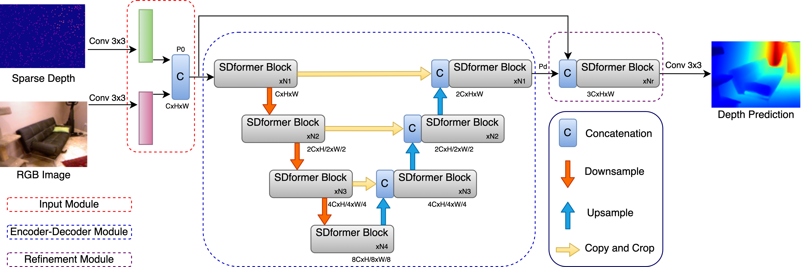
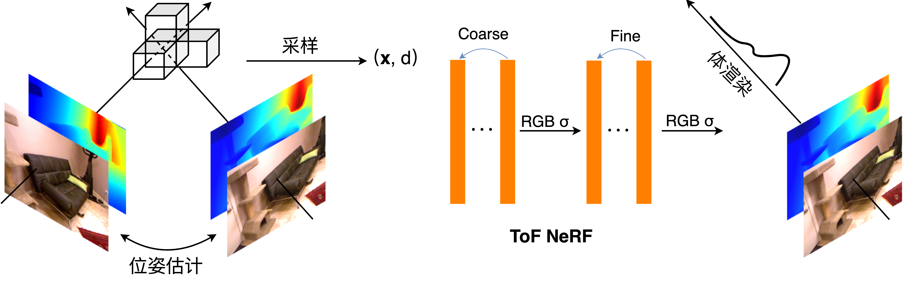

Welcome to my website! I am a master student at the Fudan University advised by Prof. Patrick Yin Chiang.
My current research focus is the theoretical understanding of self-supervised and unsupervised learning, often motivated by findings in vision and language. I am also broadly interested in theoretical aspects of machine learning in general.

A 40nm 2TOPS/W Depth-Completion Neural Network Accelerator SoC with Efficient Depth Engine for Realtime LiDAR Systems
Miao Sun, Yingjie Cao, Jian Qian, Jie Li, Sifan Zhou, Ziyu Zhao, Yifan Wu, Tao Xia, Yajie Qin, Lei Qiu, Shunli Ma, Patrick Yin Chiang Shenglong Zhuo
IEEE Transactions on Circuits and Systems II: Express Briefs
SDformer: Efficient End-to-End Transformer for Depth Completion
Jian Qian, Miao Sun, Ashley Lee, Jie Li, SHenglong Zhuo, Patrick Yin Chiang
2022 International Conference on Industrial Automation, Robotics and Control Engineering (oral)

ToFNeRF
James
Working: in April 2016 as the mentor lead of the AI team.
Internship: I joined Sony China.